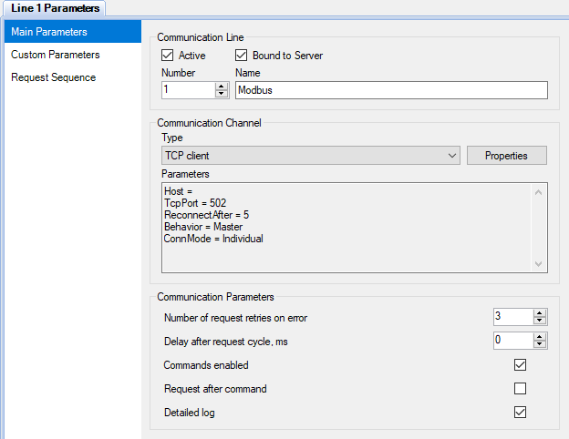
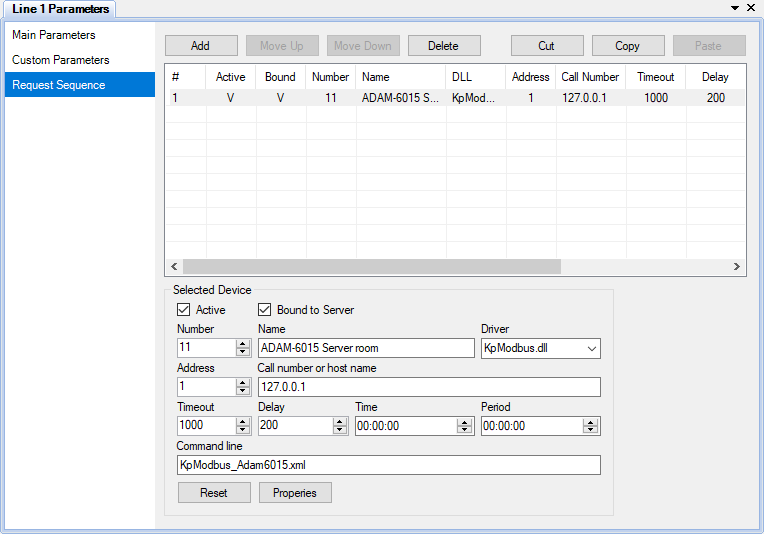

Figura 3. Importar configuración para el Comunicador
La interacción con dispositivos reales o virtuales se realiza mediante la aplicación Communicator que funciona como un máster o un esclavo, solicitando datos y enviando comandos a los dispositivos. Todos los dispositivos están vinculados a las líneas de comunicación. Las líneas de comunicación son independientes entre sí y funcionan en paralelo.
La interfaz de usuario del Communicator, diseñada para configurarlo, es parte de la aplicación Administrator. El Communicator debe ser configurado como parte de un proyecto.
La figura 1 muestra un ejemplo de los parámetros principales de una línea de comunicación. Un canal de comunicación comprende la interfaz física y un protocolo de red que se usa para intercambiar los datos con los dispositivos. Rapid Scada soporta los siguientes canales de comunicación: Puerto serie, cliente TCP, servidor TCP y UDP. En ciertos casos, si la interacción con un dispositivo es implementada por el controlador del mismo, el canal de comunicación debe ser “indefinido” (p.ej., el controlador (driver) OPC).
Si no se requiere enviar comandos a los dispositivos, por razones de seguridad se recomienda desmarcar la casilla Commands enabled (Comandos habilitados) por razones de seguridad.

Figura 1. Parámetros principales de una línea de comunicación

Figura 2. Secuencia de solicitud
El orden en que se realiza la comunicación con los dispositivos y los parámetros de la solicitud se establecen en la página Request Sequence (Secuencia de solicitud), (refiérase a la figura 2).
Si la casilla Active en la página Main Parameters (Parámetros principales)está desmarcada, la línea de comunicación queda desactivada y no se realizarán solicitudes en esa línea. Si la casilla Active en el cuadro Selected Device (Dispositivo seleccionado) está desmarcada, la comunicación con ese dispositivo queda desactivada.
La casilla Bound to Server (Vinculado con el servidor) en la página Main Parameters permite activar o desactivar el envío de los datos de la línea de comunicación al Servidor. La casilla Bound to Server en el cuadro de grupo Selected Device tiene el mismo objetivo, pero se aplica solamente al dispositivo. Si la casilla Interact with Server (Interactuar con servidor) en la página Custom Parameters (Parámetros propios) de los ajustes del Comunicador está desmarcada, toda interacción entre el Comunicador y el Servidor queda desactivada. Estas opciones son útiles para probar nuevos dispositivos que sean conectados al sistema.
Si los parámetros Time (Hora) y Period (Período) de un dispositivo son cero, el dispositivo es solicitado de manera cíclica. Si el parámetro Time es mayor que cero y el Period es cero, el dispositivo es solicitado una vez al día en la hora especificada. Si el Period es mayor que cero, el dispositivo es solicitado periódicamente a partir de la hora especificada. El campo Timeout (Tiempo de espera) define cuanto esperar por una respuesta del dispositivo tras una solicitud. El campo Delay (Retardo) define un tiempo tras cada solicitud enviada al dispositivo. Command line (Línea de comando) puede contener parámetros adicionales descritos en la documentación de un controlador de dispositivo.
Para restablecer los parámetros de solicitud del dispositivo seleccionado a los valores por defecto, haga clic en el botón Reset (Restablecer). Para abrir el formulario de propiedades del dispositivo, en caso de que el mismo sea soportado por el controlador específico del dispositivo seleccionado, haga clic en el botón Properties (Propiedades) o use el menú emergente del explorador de proyectos. Para establecer las propiedades globales para un tipo de dispositivo, seleccione la página Drivers (Controladores), seleccione el controlador del dispositivo, y si el botón está habilitado, haga clic en Properties.
Para importar las líneas de comunicación y los dispositivos desde la base de datos de configuración, a la configuración del Communicator, haga clic derecho en el nodo Communication Lines o en el nodo de una línea de comunicación específica en el explorador de proyectos, y seleccione el ítem a importar en el menú contextual. El formulario de importación se muestra en la figura 3 .
Figura 3. Importar configuración para el Comunicador
La función de sincronizar ajustes del Communicator Sync Communicator Settings (Sincronizar ajustes del Comunicador) (refiérase a la figura 4), se realiza también utilizando el menú contextual de la línea de comunicación. La sincronización permite actualizar los parámetros de las líneas de comunicación y de los dispositivos existentes según la base de datos de configuración. Sin embargo, los parámetros ingresados a mano podrían perderse.

Figura 4. Sincronizar ajustes del Comunicador